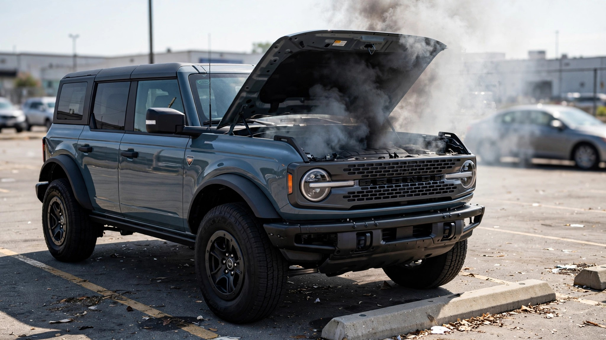

Ford Says Its Recall Problem Is Old Designs. Its Newest Truck Is on Fire.

Ford recalled 953,602 vehicles in a single week ending July 24. On the same calendar, it was running a national ad campaign with the tagline: "We put quality first. Now Ford is first in quality."
Spokesman Mike Levine told reporters the recall numbers were improving and that Ford's quality problems "mainly impact older-designed vehicles." Comforting, except for one detail: every vehicle recalled that week was a current-generation design.
Friday brought the bigger hit. NHTSA posted a recall for 565,691 Bronco and Bronco Raptor SUVs, model years 2021 through 2026, because wiring harnesses in the engine compartment can chafe against nearby parts, short-circuit, and start fires. Ford documented 15 engine-bay fires between October 2024 and June 2026. Seven were Raptors. The Bronco's current generation launched in July 2021. It is five years old. "Older-designed" does not apply.[1]
Five days earlier, Ford recalled 387,911 Explorers (2020–2026) and Lincoln Aviators (2020–2027) because second-row easy-entry seats can unlatch, tip, or slide while the vehicle is in drive. That's the sixth-generation Explorer, redesigned for 2020. Among the 14 complaints Ford logged, six came from vehicles that had already been recalled and repaired for the same defect under an earlier campaign. The fix did not fix it.[2]
Ford's quality trophy comes from JD Power's 2026 Initial Quality Study, which measures owner-reported problems in the first 90 days of ownership. Wiring that frays after two years of heat cycling would never appear in that survey. Neither would a seat latch that degrades across thousands of child-loading cycles. IQS captures the squeaks; NHTSA catalogues the fires.[3]
Put another way: Ford is measuring fit and finish while its customers are measuring flames.
FARS records 3,797 Explorer occupant deaths over the past decade, a fatality rate of 1.54 per 100 million VMT, second only to the F-150 on Ford's all-time death toll. A seat that unlatches during a crash will not improve those numbers.[4]
This is the Bronco's third recall of 2026 and at least its 22nd since the nameplate returned in 2021. Levine said Ford is finding "fewer problems on newer designed models." That statement landed the same day NHTSA published a fire recall covering every Bronco ever built.
What to do: If you own a 2021–2026 Bronco, do not park in an attached garage until the wiring fix is applied. If you own a 2020–2026 Explorer, press the easy-entry button before every trip. If it sticks in the down position, the seat may be unlocked. Schedule the dealer visit now. Check your VIN at nhtsa.gov/recalls.
The best case for Ford: Recalls are not crashes. Finding a wiring-harness problem before it kills someone is exactly how the system is supposed to work, and Ford self-reported both defects. IQS and recall severity measure genuinely different things, and the quality campaign reflects real progress on day-one build. If the fix works this time, the Explorer seat story becomes a success. That is a big if.
What this does not prove: Recall volume is a blunt instrument. A label-correction recall and a fire recall carry the same headline weight but wildly different risk. FARS Explorer deaths cover the full decade, not just the sixth-gen, and a seat defect has not been linked to any crash or fatality. We also lack enough data on the new Bronco (25 FARS deaths total) to draw rate conclusions. The "older designs" claim may hold for Ford’s full 2026 recall portfolio even if it fails for this particular week.
Sources & References
- Reuters, “Ford to recall more than 565,000 US vehicles over engine compartment fire risk,” July 24, 2026. reuters.com
- New York Post, “Ford recalling nearly 388K vehicles over injury hazard in second-row seats,” July 22, 2026. nypost.com
- USA Today, “Ford touts quality, but recalls nearly 1 million vehicles in a week,” July 27, 2026. usatoday.com
- NHTSA, Fatality Analysis Reporting System (FARS), 2014–2023. nhtsa.gov